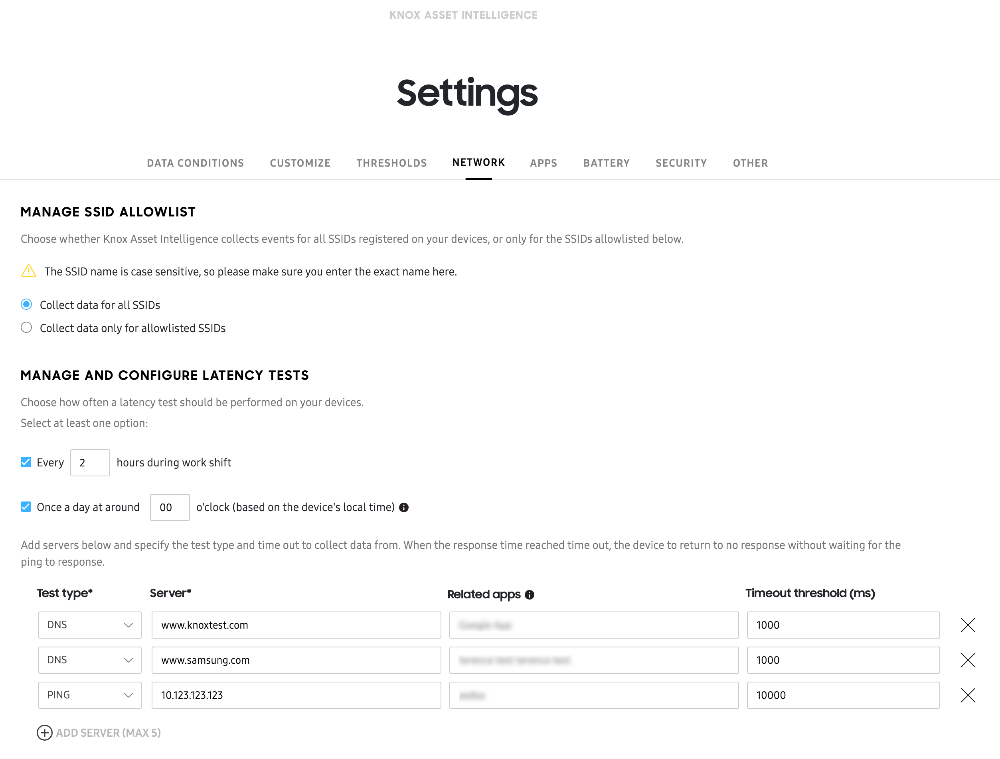

Configure dashboard settings
Last updated September 6th, 2023
After your devices get added to the Knox Asset Intelligence console and enrolled in the service, you can begin using the Dashboard to view business insights related to your fleet’s app, battery, and network usage without any additional setup.
However, if you want to customize your Dashboard layout, define thresholds in order to receive alerts, or configure work shifts, then you’ll need to configure your Dashboard Settings. To do this, click Settings near the top-right corner of the Dashboard. The Dashboard settings page is divided into the following tabs:
Note
Depending on your admin permissions, you may not be able to modify certain dashboard settings. Please ensure your admin account has the proper permissions.
Data Conditions
The DATA CONDITIONS tab allows you to define when and how data gets collected, and what type of data gets collected by the Knox Asset Intelligence service.
Work shift data collection
By default, Knox Asset Intelligence collects data at all times (if data is available). However, if you want to only collect data at certain times or under certain conditions, then you can enable the Work shift configuration option. Once enabled, data will only be collected under one of these conditions:
- During a specific time window on certain days.
- When devices connect to an allowed Wi-Fi access point.
- When managed app activity is detected.
For example, if you only want to collect work-related data from 9-5 PM on weekdays, you can set Work shift configuration to do so accordingly. By default, the work shift setting is turned off, and the devices collect data throughout the day. A shift end is detected when a device hasn’t reported activity from a managed app or connected to an allowlisted access point for longer than two hours.
You can manage the Wi-Fi SSID allowlist and managed app list by clicking the corresponding links, and specify individual managed apps that will trigger a work shift.
Data upload
The Data upload section lets you specify what type of data gets collected, and (for some insights) how often data gets collected.
Network
You can collect data related to your device’s ability to connect to Wi-Fi or mobile networks. Whenever an abnormal Wi-Fi disconnection event occurs, a system-level Samsung module reports it to the Knox Asset Intelligence agent on your device. Events are broadcast to the server every time they occur.
For mobile data, carrier connectivity information is recorded along with data usage statistics. Mobile data is collected every 2 hours by the agent, and is uploaded to the server daily.
You can upload a list of SSIDs to the console and use them to filter device data. For example, you might want to view scanning data from devices connected to a specific Wi-Fi access point.
Three network data collection options are available:
- Wi-Fi disconnection/connection data for allowlisted SSIDs — Enable this feature to collect Wi-Fi disconnection events that occur on allowlisted SSIDs.
- Mobile/wifi data usage — Enable this feature to track all mobile network data usage on your devices, during and outside of work shifts.
- Network latency results for specified test servers — Enable this feature to collect all network latency results during work shifts for test servers you define.
Refer to Network usage, Wi-Fi disconnection events, and Network latency for more details.
App
Your devices can collect information about app-related activity, such as run time, Wi-Fi and mobile data usage, and issues that occur. You can choose to collect data for the following options:
- Run time — Track foreground and background run time, as well as battery usage on your devices. This data is only tracked when the device is using the battery, and not when the device is being charged.
- Network usage — Collect Wi-Fi and mobile usage data on your devices.
- Issues — Track app usage, app no response, force close, and abnormal app events. You can select a value from 1–24 hours for your devices to report app issue data to the Knox Asset Intelligence server. Selecting a shorter time period consumes more battery on the device, but you can track event analytics closer to real-time.
Refer to App usage and App issues for more details.
Battery
The Battery section allows you to collect information about certain battery-related events that your devices can report. Battery data is reported when a battery event occurs, or when battery-related information is updated on the device.
Refer to General battery charts, Battery status, and Battery state of health for more information.
When enabling battery-related data collection, you also have the option to enable collection of Charge issues event data.
Note
This collection of Charge issues is currently in a Labs state, meaning when you enable this option, Knox Asset Intelligence collects data related to battery charging issues such as water protection failures, incomplete connections and more. This data will be used to provide battery charging insights in future releases.
Device drop detection
Knox Asset Intelligence can identify when a device is dropped and log an event when it occurs. This feature is supported by a limited number of devices. Please see Devices supporting drop detection for more details.
Note
This feature is currently under development in our Labs. Note that there are limitations on reported events and should be used as a reference only. Measured values may differ from actual.
System
Knox Asset Intelligence can monitor your device’s storage usage status. If devices have used 90% or more of their total storage, you’ll see a Bad status in the Dashboard. If they have used less than 90%, you’ll see a Normal status.
Scanning Statistics
If your organization also uses Knox Capture, configure the scanning insights that Knox Asset Intelligence receives here. You can choose to refresh scanning data after every scan event or after a preset amount of time (1-24 hours).
Refer to Scanning performance for more details.
Customize
If you prefer to focus on certain data insights, you can define which tiles appear on your dashboard. Select or clear one or more insights and save your changes to remove the corresponding tiles from your dashboard without impacting reported data.

Note
To enable Battery level at shift start and Battery level at shift end, you must first define the conditions for a work shift on the DATA CONDITIONS tab.
Thresholds
On the THRESHOLDS tab, you can set certain event thresholds at which alerts are triggered.
Today’s issues

Drag the sliders to adjust the yellow and red thresholds, which represent the percentage of impacted devices required before an alert is sent.
Take, for example, a case where you’re managing a group of 100 devices. The yellow alert threshold for Abnormal app events is set to 15% and the red threshold is set to 25%. You would receive an email alert when 16 devices report an abnormal app event, and another when 26 devices report an event.
TODAY’S ISSUES also supports device groups. Admins can set a minimum number of devices for a group to trigger an email alert. Doing so ensures you only receive relevant alerts for the devices you’re managing.
Under the sliders, enter a minimum number of devices for a group. Any device groups below the specified minimum size are ignored in threshold event calculations.
Knox Asset Intelligence also allows you to manage the types of report data you receive. There are two ways to manage your report preferences:
- Through the Reporting menu in Manage services & preferences
- By clicking EMAIL PREFERENCES in the bottom-right corner of TODAY’S ISSUES
Choosing either option takes you to a menu where you can select whether to receive reports for app-related issues, Wi-Fi-related issues, battery-related issues, or all of them. If you’ve configured a list of managed apps, only managed app issues are reported by default.
Network
You may want to track whether a certain number of Wi-Fi disconnection events are occurring, based on the following conditions:
- BSSIDs (basic service set identifiers) with a certain number of disconnection events, per day
- Devices with a certain number of disconnection events, per day
- Groups that contain devices with a certain number of disconnection events, per day
Under NETWORK, you can enter a number of events as a threshold for each category. This number must exceed 1. Once the detected number of disconnection events exceeds the threshold, an email alert is triggered.
In the top-right corner of the NETWORK section, enable Recommended Wi-Fi disconnection thresholds to have the service intelligently define Wi-Fi disconnection event thresholds based on an internal statistical model. This option is only available once Knox Asset Intelligence has collected enough network data from your devices. If you enable the recommended values and save your changes, the existing threshold values are overridden for all admins in your tenant.
App
To identify apps that are consuming abnormally large amounts of battery or network data, you can set threshold percentages for both battery consumption and network usage. These thresholds are measured per day and per device. If an app exceeds one of the thresholds, the device records it as an event and the data is displayed as an insight in the relevant dashboard charts.
If a small number of your devices are reporting high app usage statistics that aren’t representative of the whole device fleet, you can also enter a minimum device count to ignore app data from those devices.
In the top-right corner of the APP section, enable Recommended app thresholds to have the service intelligently define app battery and network consumption event thresholds based on an internal statistical model.
If you’ve added Managed Applications in Settings > MANAGED APPS, you’ll see a checkbox indicating that only managed apps are used by default when calculating recommended app battery and network consumption. To calculate recommended thresholds based on all apps in your organization, clear the checkbox.
Battery
In this category, you can define the percentage of battery consumption that constitutes a battery drain event, as well as the battery percentage considered to be a low battery level.
You can also configure when battery alerts appear on your dashboard charts. Specify the threshold percentages of devices in your fleet or groups to exceed before an alert is triggered. For low battery events, battery drain events, and charge events, you can also select the average number of events in a day that must be reached before the alert triggers.
In the top-right corner of the BATTERY section, enable Recommended battery thresholds to have the service intelligently define battery event thresholds based on an internal statistical model. This option is only available once Knox Asset Intelligence has collected enough battery data from your devices. If you enable the recommended values and save your changes, the existing threshold values are overridden for all admins in your tenant.
Network
The NETWORK tab lets you manage your SSID allowlist and latency test servers.

SSID allowlist
Select whether you want to capture data for all SSIDs or only for certain SSIDs.
If you choose to capture data only for allowlisted SSIDs, enter an SSID in the provided field. Click ADD SSID to add more, up to a maximum of 10. When you’re finished, click SAVE.
Caution
Make sure your SSID names don’t contain spaces, otherwise you may experience data collection issues.
Your Wi-Fi connectivity events are then captured based on the option you selected.
Manage latency test servers
To help you passively monitor network speeds, Knox Asset Intelligence offers the ability to add up to five latency test servers. These servers also help troubleshoot whether latency issues might be caused by client, server, or intermediate network infrastructure problems.
For each test server, you can select one of the three types of latency tests:
- PING — Enter either an IP address or a domain name. For example, 0.0.0.0 or website.com.
- DNS — Enter a domain name. For example, website.com.
- TCP — Enter a URL that leads to a content page. For example, http://www.website.com/content.
Every two hours during a work shift, Knox Asset Intelligence performs a latency test on each of the servers you set up.
If you want to see how long it takes a specific app to reach a server, you can add an optional Related app to your test. For example, if you add the Google app to your test, the Network latency response times tile displays the name of the related app when you hover your cursor over the response time value for the server.
Managed apps
In the MANAGED APPS tab in Dashboard settings, you can categorize apps as unmanaged or managed, letting you easily filter out unwanted insights on the dashboard. By default, all apps are considered unmanaged.
Caution
Only apps used within the last 60 days are available for categorization.

Use the search bar to search for an app or package name, or select apps in either list to move. You can move apps back and forth between the two lists using the arrow buttons in the middle.
If you only want to see data from managed apps on the console, select Show only my managed apps in the dashboard and in the app detailed pages.
If you wish to calculate recommended battery or network consumption threshold values using only your managed apps, simply add one or more apps to the Managed Apps list. The Use only managed apps to calculate the recommended threshold value for battery and network consumption checkbox will be selected once you add a managed app.
If you wish to use ALL apps to calculate recommended thresholds for battery and network consumption (instead of just managed apps), you can clear the checkbox.
Is this page helpful?